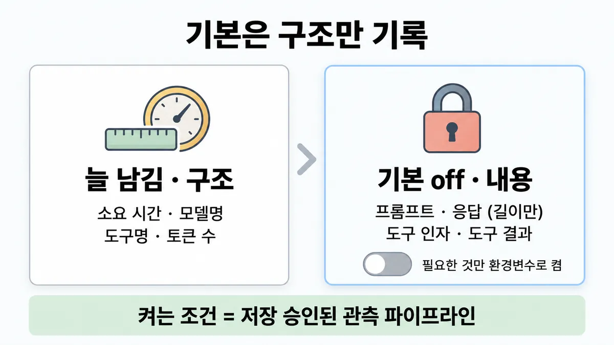
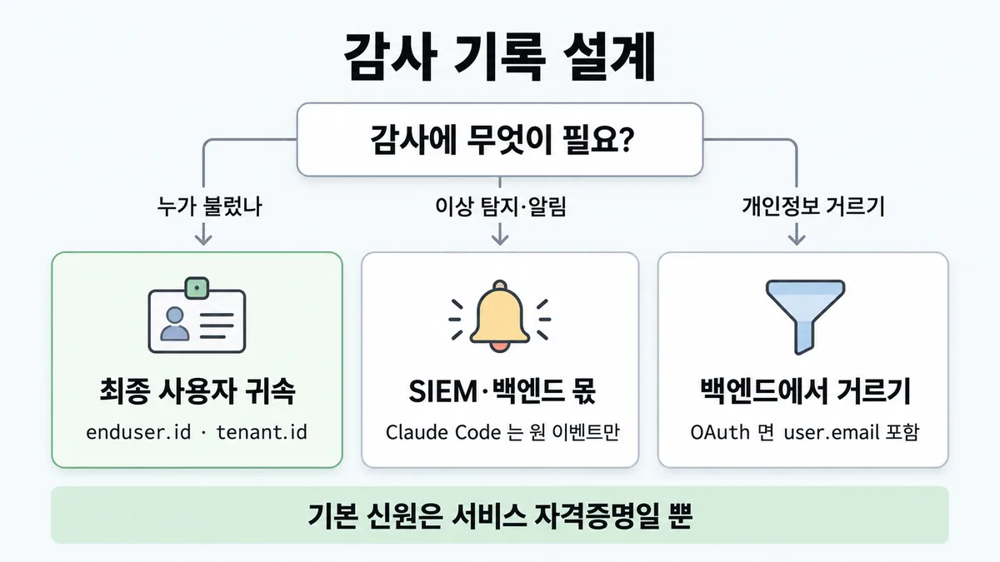

■ 텔레메트리 기록 범위
왜 배우나 — 시험이 요구하는 것
시험 목표 3.4 대규모 관측 · D3 연결 19%Analyze observability challenges and select monitoring strategies at scale
이 개념으로 푸는 판단 (할 수 있어야 하는 것)
- 3.4② 수천 명이 쓰는 에이전트 — 장애 분석용으로 프롬프트·응답 본문을 다 남길까? — 무엇을 기록하나 (구조 데이터 기본 · 본문은 opt-in · 최종 사용자 귀속)
- 4.6① 비용 급증 알림이 떴다 — 대시보드만 보면 원인이 나오나? (빈 목표) — 모니터링(무엇이 움직였나)과 관측(왜 — 실행 추적)을 구분해 쓰기
한눈에
기본 텔레메트리는 구조만 — 소요 시간 · 모델명 · 도구명 · 토큰 수. 에이전트가 읽고 쓴 내용(프롬프트 · 응답 · 도구 인자 · 도구 결과)은 기본 기록 안 함, 프롬프트·응답은 길이만. 필요한 것만 환경변수로 하나씩 켬 ✓ 확인
비유 웹 액세스 로그. 경로·상태코드·지연(latency)은 늘 남기고 요청 본문(PII)은 기본으로 안 남김. 감사는 사용자 ID 를 달아 SIEM 으로


ELI5
건물 출입 기록을 생각해 보세요.
- 기본으로는 누가 몇 시에 몇 층에 갔는지만 적어요.
- 무슨 대화를 했는지는 적지 않아요.
- 대화까지 적으려면 "적어도 된다"는 허락이 먼저 있어야 해요.
- 손님이 많으면 출입증에 손님 이름을 달아야 나중에 누가 갔는지 알아요.
개념 설명
원리
기본 = 구조
- 모든 span 에 소요 시간 · 모델명 · 도구명. 토큰 수는 API 가 usage 를 돌려준 요청에만(실패·중단 요청은 빠질 수 있음).
- 프롬프트·응답은 길이만. 도구 인자·도구 결과 내용은 기본 없음.
본문 = 하나씩 켬 (opt-in)
- 프롬프트 · 응답 · 도구 인자 · 도구 결과 · API 원문 JSON 을 각각 변수로 켬.
- API 원문 JSON 을 켜면 프롬프트·도구 인자·도구 결과 셋을 다 켠 것과 같음(대화 이력 전체가 들어감, thinking(사고) 내용은 가려짐).
- 켜는 조건은 하나 : observability(관측) 파이프라인이 그 데이터를 저장하도록 승인됐는가.
누가 했나 = 최종 사용자 귀속
- 텔레메트리의 신원 속성은 Anthropic 을 부르는 자격증명 기준. 한 배포가 여러 사용자를 모시면 전부 "서비스 계정"으로 찍힘.
- 요청마다
enduser.id·tenant.id를 resource attribute 로 넣으면 도구 결정·결과·MCP 연결·권한 모드 변경 이벤트가 사용자별 감사 기록이 됨 → SIEM.
역할 나눔
- Claude Code 는 원 이벤트만 냄. 이상 탐지 · 기준선 · 알림은 SIEM·observability 백엔드 몫.
- OTel 데이터는 내가 지정한 엔드포인트로만 가고 Anthropic 으로 안 감.
대규모의 observability 원칙 (Anthropic 연구 시스템)
- 개별 대화 내용을 보지 않고 결정 패턴·상호작용 구조를 보는 높은 수준의 observability 로 원인을 찾음.
규칙과 판단


갈림길
① 본문을 켤까 [3.4②]
기본 off
켜는 조건 = observability(관측) 파이프라인이 그 데이터를 저장해도 된다고 승인됐을 때만 ✓ 확인
OTEL_LOG_USER_PROMPTS=1
프롬프트 원문 · 응답 변수가 비면 프롬프트 값을 따라감. 응답만 끄려면 OTEL_LOG_ASSISTANT_RESPONSES=0 ✓ 확인
OTEL_LOG_ASSISTANT_RESPONSES=1
응답 원문 (비워 두면 프롬프트 변수 값을 따라감) ✓ 확인
OTEL_LOG_TOOL_DETAILS=1
도구 입력 인자 (파일 경로 · 셸 명령 · 검색어) ✓ 확인
OTEL_LOG_TOOL_CONTENT=1
도구 결과 내용 (파일 내용 · Bash 출력 · MCP/웹 결과) — 트레이스 켜야 함 ✓ 확인
OTEL_LOG_RAW_API_BODIES
API 요청·응답 JSON 전체(대화 이력 전부) = 프롬프트·도구 인자·도구 결과 셋 전부에 동의한 것과 같음 ✓ 확인
②③⑤ 감사에 필요한 것 [3.4②] [4.6①]
최종 사용자 귀속
기본 신원은 서비스 자격증명일 뿐. 요청마다 OTEL_RESOURCE_ATTRIBUTES 에 enduser.id · tenant.id(퍼센트 인코딩) → SIEM ✓ 확인
SIEM·observability 백엔드 몫
Claude Code 는 원 이벤트만 냄 ✓ 확인
백엔드에서 거르기
OAuth 인증(authentication)이면 user.email 이 속성에 포함 ✓ 확인
나머지 규칙
-
OTel 내보내기 자체가 opt-in. 데이터는 내가 지정한 엔드포인트로만 가고 Anthropic 으로 안 감 ✓ 확인
-
대규모에서 내용 없이 보는 법 : 결정 패턴 · 상호작용 구조를 봄. Anthropic 연구 시스템도 개별 대화 내용은 안 보고 관측 ✓ 확인
규칙 원문 ①②③⑤ (갈림길로 그린 규칙)
-
본문 켜는 스위치 ✓ 확인 [3.4②]
변수 더해지는 것 OTEL_LOG_USER_PROMPTS=1프롬프트 원문 OTEL_LOG_ASSISTANT_RESPONSES=1응답 원문 (비워 두면 프롬프트 변수 값을 따라감) OTEL_LOG_TOOL_DETAILS=1도구 입력 인자 (파일 경로 · 셸 명령 · 검색어) OTEL_LOG_TOOL_CONTENT=1도구 결과 내용 (파일 내용 · Bash 출력 · MCP/웹 결과) — 트레이스 켜야 함 OTEL_LOG_RAW_API_BODIESAPI 요청·응답 JSON 전체(대화 이력 전부) = 프롬프트·도구 인자·도구 결과 셋 전부에 동의한 것과 같음 켜는 조건 = observability 파이프라인이 그 데이터를 저장해도 된다고 승인됐을 때만 ✓ 확인
-
한 배포가 여러 최종 사용자를 모심 → 기본 신원은 서비스 자격증명일 뿐. 요청마다
OTEL_RESOURCE_ATTRIBUTES에enduser.id·tenant.id(퍼센트 인코딩) →tool_decision·tool_result·mcp_server_connection·permission_mode_changed이벤트가 사용자별 감사 기록 → SIEM ✓ 확인 [3.4②] -
이상 탐지 · 기준선 · 세션 간 연관 · 알림은 SIEM·observability 백엔드 몫. Claude Code 는 원 이벤트만 냄 ✓ 확인
-
기본에도 신원은 있음 : OAuth 인증이면
user.email이 속성에 포함 → 필요하면 백엔드에서 거르기 ✓ 확인
더 깊이 : 판단 규칙 · 상황 변수 (설명)
판단 규칙
| 조건 | 답 | 등급 | 근거 |
|---|---|---|---|
| 장애 분석용으로 원문을 다 남기자는 요구 | 기본은 구조만. 원문은 승인된 파이프라인에서만 opt-in | ✓ 확인 | agent-sdk/observability en 409·418줄 |
| 한 배포가 여러 최종 사용자를 모심 · 보안팀이 사용자별 감사 요구 | OTEL_RESOURCE_ATTRIBUTES 에 enduser.id · tenant.id → 이벤트를 SIEM 으로 |
✓ 확인 | agent-sdk/observability en 374·399줄 |
| 이상 징후 알림이 필요 | SIEM·백엔드에서 탐지 (Claude Code 는 원 이벤트만) | ✓ 확인 | monitoring-usage en 1746줄 |
| 프롬프트는 남기되 응답은 빼야 함 | OTEL_LOG_USER_PROMPTS=1 + OTEL_LOG_ASSISTANT_RESPONSES=0 |
✓ 확인 | monitoring-usage en 1860줄 |
| 도구 인자에 민감값이 있을 수 있음 | 켜더라도 백엔드에서 거르기·가리기 설정 | ✓ 확인 | monitoring-usage en 1861줄 |
| OAuth 로 인증(authentication)한 사용자 텔레메트리 | user.email 이 포함됨 → 필요하면 백엔드에서 거름 |
✓ 확인 | monitoring-usage en 1858줄 |
| 대규모에서 원인을 찾되 개인정보를 지켜야 함 | 내용이 아닌 결정 패턴·상호작용 구조 관측 | ✓ 확인 | multi-agent-research-system en 72줄 |
상황 변수
| 변수 | 값 | 답 쪽 | 등급 | 근거 |
|---|---|---|---|---|
| 파이프라인 승인 | 없음 | 본문 변수 전부 비움 | ✓ 확인 | agent-sdk/observability en 418줄 |
| 파이프라인 승인 | 있음 · 필요한 항목만 | 해당 변수만 켬 | ✓ 확인 | agent-sdk/observability en 409~416줄 |
| 배포 형태 | 한 배포 · 여러 최종 사용자 | 사용자 귀속 필요 | ✓ 확인 | agent-sdk/observability en 374줄 |
| 배포 형태 | 개발자 본인 세션 | 신원 = 본인 자격증명이라 추가 귀속 없이도 사람이 보임 | 업계 일반 | 뒤집히는 때 3 |
| 인증 방식 | OAuth | 기본에도 email 포함 | ✓ 확인 | monitoring-usage en 1858줄 |
| 필요한 것 | 도구 결과 내용 | OTEL_LOG_TOOL_CONTENT (트레이스 켜야 함, 기본 60KB 에서 잘림) |
✓ 확인 | agent-sdk/observability en 415줄 |
| 필요한 것 | 요청·응답 전체 | OTEL_LOG_RAW_API_BODIES = 프롬프트·도구 인자·도구 결과 셋 다 동의 |
✓ 확인 | agent-sdk/observability en 416줄 |
연습 문제
Agent SDK 배포 하나가 여러 고객사의 상담원 300명을 모신다여러 사용자. 보안팀은 어느 상담원이 어떤 도구를 불렀는지누가 불렀나 SIEM 에서 추적하길 원한다. 개발자는 "이벤트마다 신원 속성이 이미 찍힌다"고 한다. 무엇을 더할까?
시험 대비
함정
- "장애 분석 위해 프롬프트·응답 원문을 기본으로 전부 수집·보관" → 기본 off, 승인된 파이프라인만 ✓ 확인
- "서비스 계정 신원만으로 누가 불렀는지 감사된다" → 최종 사용자 귀속을 넣어야 ✓ 확인
- "기본 텔레메트리엔 개인정보가 0" → OAuth 면 user.email 포함 ✓ 확인
- "프롬프트 변수만 켰으니 응답은 안 남는다" → 응답 변수가 비면 프롬프트 값을 따라감. 응답만 끄려면
OTEL_LOG_ASSISTANT_RESPONSES=0✓ 확인 - "Claude Code 가 이상 징후를 알려 준다" → 원 이벤트만, 탐지는 SIEM ✓ 확인
신호
"Telemetry is structural by default."
"The content your agent reads and writes is not recorded by default."
"Leave these unset unless your observability pipeline is approved to store the data your agent handles."
"these attributes identify your service’s credential, not the end user on whose behalf the agent acted."
"Claude Code emits the raw event stream only."
더 깊이 : 뒤집히는 때 · 오답 재료 (설명)
뒤집히는 때
1. 본문을 켜는 게 맞는 때
- 조건 : observability 파이프라인이 고객 데이터 저장을 승인받음(보존 기간·접근 통제(access control) 포함). 품질 조사에 프롬프트 원문이 꼭 필요.
- 판단 : 그때는 필요한 변수만 켬. "원문 수집은 항상 오답"이 아니라 "기본 off + 승인 뒤 opt-in"이 규칙.
- 등급 : ✓ 확인
- 근거 : agent-sdk/observability en 418줄
2. 디버깅 한 번 때문에 전부 켜는 때
- 조건 : 이상한 응답 하나를 보려고
OTEL_LOG_RAW_API_BODIES=1. - 판단 : 이건 프롬프트 · 도구 인자 · 도구 결과 셋을 다 켠 것과 같고, 대화 이력 전체가 이벤트마다 들어감. 좁게 보려면 해당 변수 하나만.
- 등급 : ✓ 확인
- 근거 : agent-sdk/observability en 416줄
3. 사용자 귀속이 필요 없는 때
- 조건 : 개발자 각자가 자기 자격증명으로 Claude Code 를 씀.
- 판단 : 신원 속성이 이미 그 사람 자격증명이라 추가 귀속 없이도 누가 했는지 보임. 공식 조건문은 "한 배포가 여러 최종 사용자를 모실 때".
- 등급 : 업계 일반 (조건문은 확인)
- 근거 : agent-sdk/observability en 374줄
4. "기본이니 개인정보는 없다"가 틀리는 때
- 조건 : OAuth 인증 사용.
- 판단 : 기본에도
user.email이 속성에 들어감. 규정상 문제면 백엔드에서 거름. - 등급 : ✓ 확인
- 근거 : monitoring-usage en 1858줄
오답 재료
| 오답 | 왜 끌리나 | 왜 틀리나 | 등급 | 근거 |
|---|---|---|---|---|
| "장애 분석을 위해 모든 프롬프트·응답 원문을 기본으로 수집·보관" | 로그는 많을수록 안심 | 기본은 구조만, 원문은 승인된 파이프라인에서 opt-in | ✓ 확인 | agent-sdk/observability en 409·418줄 |
| "서비스 계정 신원만으로 사용자별 감사가 된다" | 이벤트마다 신원이 찍히니까 | 찍히는 건 서비스 자격증명. 최종 사용자는 직접 넣어야 | ✓ 확인 | agent-sdk/observability en 374줄 |
| "Claude Code 가 이상 징후를 탐지해 알려 준다" | 보안 이벤트를 내니까 | 원 이벤트만. 탐지·알림은 SIEM | ✓ 확인 | monitoring-usage en 1746줄 |
| "텔레메트리를 켜면 대화가 Anthropic 으로 간다" | 외부 전송이 걱정됨 | 내가 지정한 OTel 엔드포인트로만 | ✓ 확인 | monitoring-usage en 1860줄 |
| "프롬프트만 켰으니 응답은 안 남는다" | 변수 이름이 다르니까 | 응답 변수가 비면 프롬프트 값을 따라감 | ✓ 확인 | monitoring-usage en 1860줄 |
| "원문 대신 전부 샘플링해 남기면 된다" | 흔한 로그 관행 | 공식 문서엔 샘플링 규칙 없음. 공식 축은 구조 기본 · 항목별 opt-in · 사용자 귀속 | 업계 일반 | 미해결 1 |
참고
개념
출처
- 가이드 목표 3.4 공식 시험 가이드 v1.0
- agent-sdk/observability (en 374·383·399·409~418줄)
- monitoring-usage (en 1688·1746·1856~1861줄)
- multi-agent-research-system (en 72줄)
상태
- ✓ 확인 (①~⑥)
미해결
- 목록 3.4② 가 적은 "대규모 샘플링 비율 · 알림 기준"은 받은 원문에 없음 (agent-sdk/observability 0건 · monitoring-usage 는 링크 URL 1건뿐, 검색어 "sampl") — 인용하지 않음.
- 규제 환경(HIPAA·GDPR)에서 텔레메트리 보존 기간은 이 원문 밖 → 5.4 카드.
- Claude Code 밖 앱(직접 API)의 기록 범위는 공식 규칙 없음 — 같은 원칙을 쓰는 건 업계 일반.